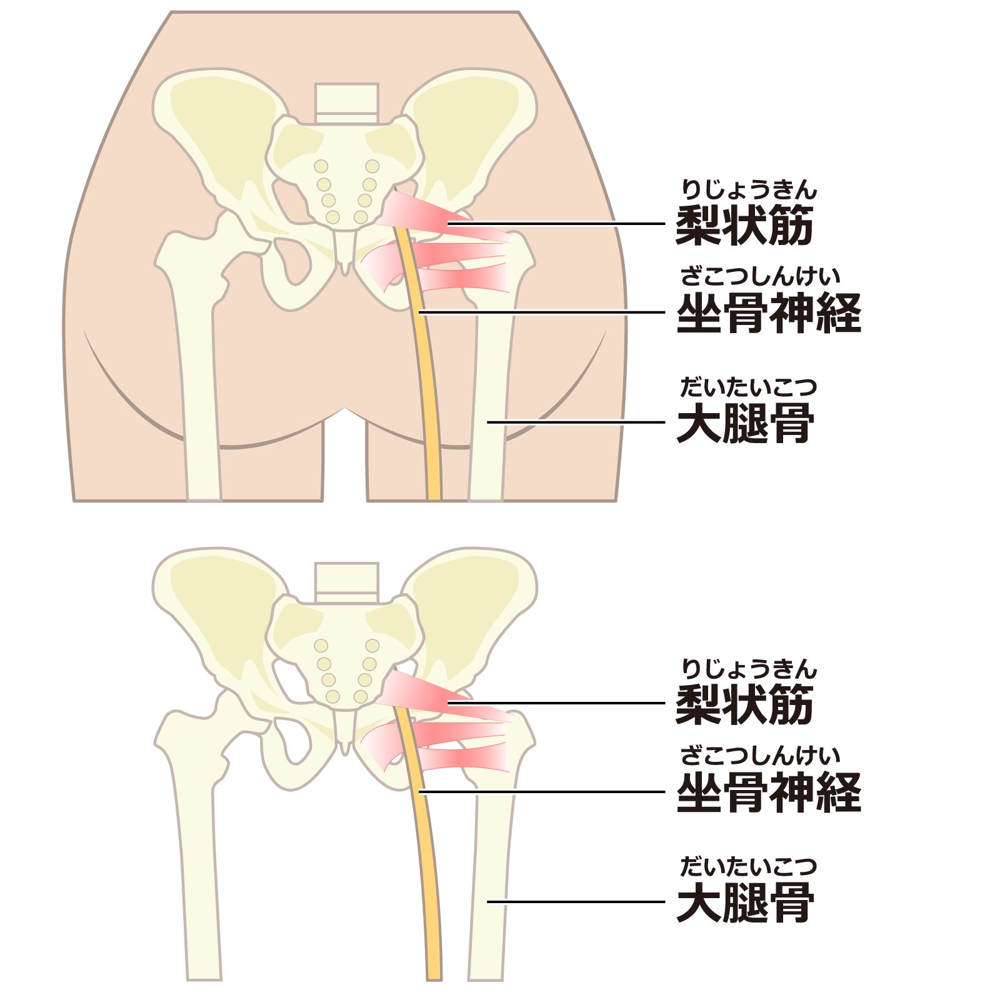

坐骨神経痛
坐骨神経痛とは
坐骨神経痛は、腰からお尻、太もも、ふくらはぎ、足先まで伸びる坐骨神経が、なんらかの原因で刺激・圧迫されることで起こる痛みやしびれ等の症状のことです。

症状
お尻から脚にかけての電気が走ったような鋭い痛みやしびれるような痛み
お尻の重だるさや違和感
体をひねった際に筋肉や神経が突っ張る感じがする
症状は、右もしくは左足のどちらか一方のみに出ることがほとんどです。
また足の一部分だけに強く感じることもあれば、足全体に強い症状が見られる場合もあります。
原因
坐骨神経痛の原因となる病気には、腰椎椎間板ヘルニア、腰部脊柱管狭窄症、腰椎すべり症、腰椎分離症、梨状筋症候群、仙腸関節炎、脊椎・脊髄・骨盤内のがんなどがあります。
年齢が若い方の場合は腰椎椎間板ヘルニア、高齢者の場合は腰部脊柱管狭窄症によるものが多いです。
この他にも、糖尿病、帯状疱疹、アルコールなどの中毒性の病気、喫煙、ストレスなどが原因となるとする報告があります。
診断
坐骨神経痛の診断は、原因となる病気があるかどうかを調べることで行います。
椎間板ヘルニアの場合はMRI検査などを用いて診断します。
その他、腰椎レントゲン写真、CT検査、脊髄造影検査などが必要となる場合もあります。
治療
坐骨神経痛の治療は、症状を和らげるための薬物療法やリハビリテーションが基本です。
薬物療法としては、痛みを取るために非ステロイド性消炎鎮痛薬（NSAIDs）を用います。
また、電気が走るような鋭い痛みなどに対しては、神経障害性疼痛治療薬、筋肉の緊張を和らげる薬などを用いることがあります。
症状が強い場合は、原因となる病態に応じて装具療法、脊髄（脳）刺激療法、認知行動療法、手術療法を選択することがあります。
参考文献
https://toutsu.jp/pain/zakotsu.html
https://doctorsfile.jp/medication/336/
https://www.karasawa.gr.jp/case/zakotsu/
https://www.daiichisankyo-hc.co.jp/health/symptom/44_shinkeitsu/
https://www.akita-noken.jp/general/sick/spinal-cord/page-2488/